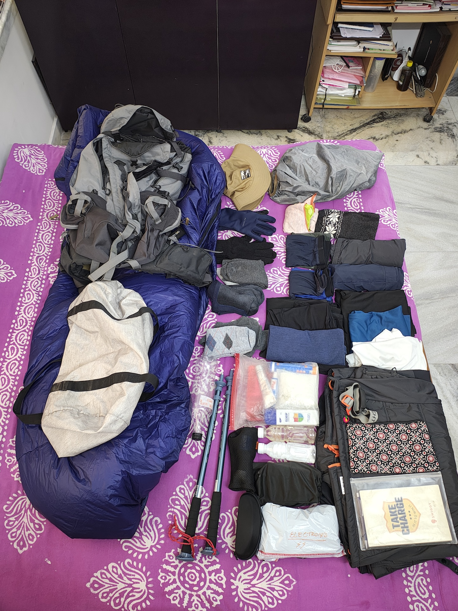
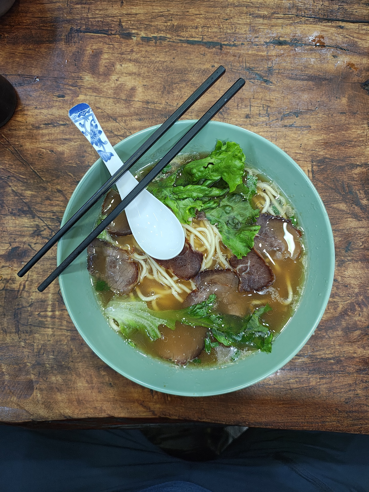
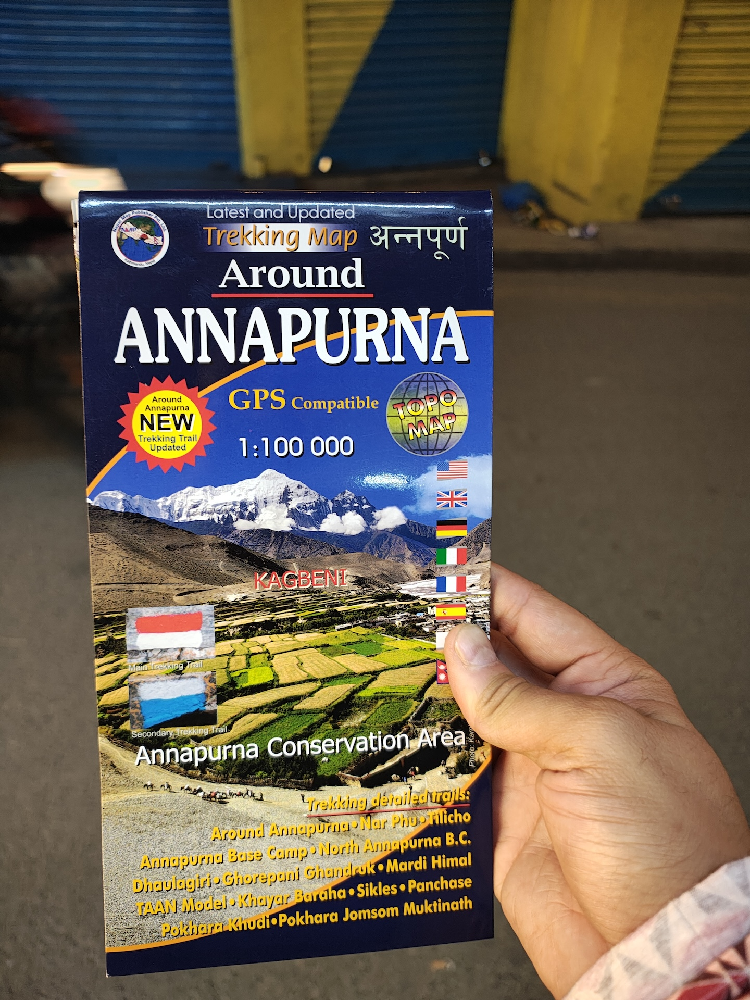

Manaslu Circuit - Reaching Kathmandu¶
This is a series of follow-ups after the ManasluCircuit2025
Date: 8th May, 2025 (I am posting this after almost a year)
Day -2/15 : Logistics.¶
In Kathmandu we had hotels booked already. Niranjan was going to be bunking with me. He would arrive later in the night after most of us. Thejas and Hassan arrived a week early. Hassan really loves Nepal. I was coming to Nepal for the first time (first international trip too) and I was with Shyam and Sonam.
I had not booked my return flights. The packing for this trip was short. I tried taking one of those overhead shots of the entire packing list spread around on a bed. I was to fly to Delhi, spend a day at Shyam's and then head to Nepal.
We needed to get some logistics sorted in terms of carrying cash, so that we can get them exchanged. We were unsure as to how Nepali money-changers treat high-denomination notes from India. (ps. it was not a problem, we found plenty of people willing to change our INR for Nepali at 1.5 rate)

Day -1/15 : In Nepal¶
We started quite a bit early from Shyams home. We reached the airport by noon and surprisingly we were done with the formalities by 1:30 pm. We were actually quite early as the flight was in the evening.
I spent this time roaming around the airport and then heading to the lounge at the Delhi airport as I was very hungry. The food was okay and I ate a bit and had some coffee. I also sent some emails and spoke to a friend. On a side note, I finalized a job — though employment was still a couple months away. Looking at Shyam, I was starting to get used to the idea of working from my phone. It was actually not that bad. He is on another level though. He is able to get a LOT done from his mobile phone itself. So is Peter.
After this I headed to the gate hoping to board the plane, but sadly the flight was delayed by almost an hour. This was really frustrating. Shyam had booked his seats specifically so that he would get a decent view of Mt. Everest which sadly didn't happen because of this delay.
The flight was okay for me. It was a widebody aircraft operated by Nepal Airlines. The in-flight entertainment was not working. But the views were good and I was able to charge my phone. What more does a man need ?
We landed in KTM at around 8 and I was very excited from the start. Everything felt magical; just like in the mountaineering documentaries. From the immigration counter (my first international travel), to the baggage collection area.
Post landing, we got our NCell sim cards, which were promptly activated. I have coverage for 28 days. Note: NCell reception in the Annapurna region is okay, but we did not get any cell reception in the Manaslu Valley. Nepal-Telecom is a better alternative as it does have good high-altitude coverage.
We withdrew some money from the ATMs near the airport. Surprisingly they were exchanging at LIVE exchange rates with a flat fee. This was a life-saver. Also to my surprise, Nepal does accept UPI payments, though you have to activate it and it stays active for 1 week.
The cab ride was interesting. In Nepal vehicles are extremely expensive as the government taxes them very highly. The cab was an old car which was such a relief because I am used to seeing cars with 10-inch displays and this was not one of those things. It felt like a good, manual car. :)
Our hotel is right in the middle of Thamel and as soon as the cab pulled into the streets I could see rows and rows of shops selling climbing gear. I was in heaven. It was quite late, so most of the shops were closing out. After checking-in the hotel we decided to take a walk in the streets and find something to eat. We had dinner at a shop run by a Chinese lady. I had pork Thukpa; which was great. The shop had a supermarket-ish thing going on. Once I walked in, I was shocked to see rows and rows of dry-spices pork cuts. The menu was filled with very exotic looking dishes, some of which I had never seen or heard of before. I was really excited to try them.

Walking in Thamel was like walking in a park. You could find everything from first-copy clothing to high quality used gear at very competitive prices. The only catch is that you should have an eye for spotting good gear (and a good deal) as most of the time the really good picks are mixed with the not-so-good picks. If you are not careful, you may end up with a copy etc. As a ritual I bought a map (I really like maps) of the Annapurna region which is what I was planning to hike after Manaslu.

Niranjan was arriving soon, so we decided to head back. We were also pretty tired and tomorrow was another big day.
We were meeting our guide and we would get the permits and cash sorted. The trail would have no money-exchangers and no ATM facilities, so we had to carry 2 weeks worth of cash with us.
Kathmandu to Machakhola is next. It is still under-construction.